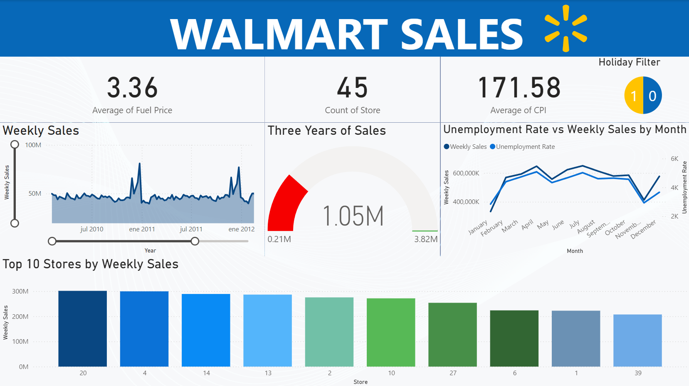

Walmart Sales
To interact with the dashboard, please download it: Download Dashboard
This comprehensive analysis examines sales data from 45 Walmart stores over a three-year period (2010-2012), investigating the relationships between weekly sales and various economic indicators including CPI, fuel prices, temperature, and unemployment rates. The project utilized SQL for data preprocessing and analysis, with Power BI for creating interactive visualizations that reveal key insights about store performance and economic impacts on sales patterns.
Goals
- Understand seasonal patterns in sales across different stores
- Evaluate the impact of holidays on weekly sales performance
- Investigate how unemployment rates correlate with sales patterns
Methodology
- Build the data base
- Create a Backup
- Delete Duplicates
- Standardize the data
- Date formatting to MM-DD-YYYY
- Rounding numerical values (Weekly Sales to 2 decimals, Temperature to whole numbers, etc)
- Converting Holiday Flag to integer type
- Ensure that there is no missing data
- Remove unnecesary columns or Rows
- Exploratory Data Analysis
- Connect Power BI to the Database
- Used Power Query to change Date to actual Date format
- Created visualisations
Tools Used
- SQL: Used for data preprocessing and exploratory data analysis
- Power BI: Created interactive visualizations and dashboard
- Statistical Analysis: Correlation analysis between various economic indicators
Analysis
The analysis revealed several significant patterns in Walmart's sales data. Store #20 emerged as the top performer in weekly sales, while holiday periods showed substantial sales increases compared to regular days (450 holiday vs. 5,985 non-holiday observations). Economic indicators painted an interesting picture: an average fuel price of $3.36 and a CPI of 171.58, though correlation analysis showed no strong direct relationship between these factors and sales performance. The data also demonstrated clear seasonal patterns, with notable sales peaks during early 2011 and 2012, particularly during major holidays like Thanksgiving and New Year.
Conclusions
Through detailed SQL analysis and Power BI visualization, this project uncovered valuable insights for Walmart's retail strategy. The findings highlight the crucial role of holiday seasons in driving sales performance, with clear patterns emerging in the three-year dataset. While economic indicators like CPI and fuel prices showed no strong direct correlation with sales, the analysis revealed important seasonal trends and store-specific performance patterns. These insights suggest opportunities for optimizing inventory management during peak periods and applying successful strategies from top-performing stores across the network. The project demonstrates the power of combining robust data analysis with business intelligence tools to derive actionable retail insights, showcasing both technical SQL expertise and strategic business thinking.
Original data set: https://www.kaggle.com/datasets/mikhail1681/walmart-sales
Source code: https://github.com/GerardoFernandez7/WalmartSales_Project.git